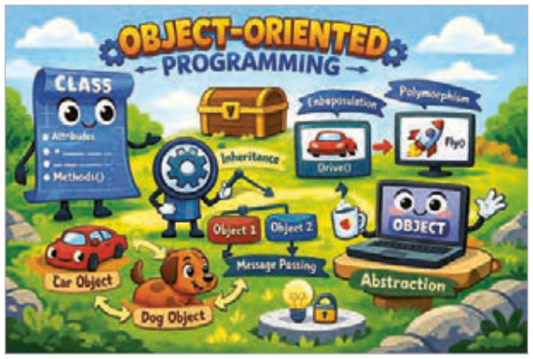

در دنیای واقعی، اشیای مشابه (مانند خودروها) با وجود تفاوت در مدل و رنگ، ویژگیها و رفتارهای مشترکی دارند. این موضوع به کدام مفهوم در برنامهنویسی مرتبط است؟
چرا با افزایش حجم برنامهها، نگهداری و اصلاح آنها دشوارتر میشود؟ چگونه میتوان ساختار برنامه را بهگونهای طراحی کرد که تغییرات، کمترین تأثیر را بر سایر بخشها داشته باشند؟
اگر بخواهید در یک بازی رایانهای، چند شخصیت با رفتارهای مشابه و ویژگیهای متفاوت طراحی کنید، استفاده از چه روشی در برنامهنویسی مناسبتر است؟
به چه دلیل در طراحی بسیاری از نرمافزارها و برنامههای بزرگ، از شیوه برنامهنویسی شیءگرا استفاده میشود؟
«کلاس» در برنامهنویسی به چه چیزی شباهت بیشتری دارد: نقشه یک ساختمان یا خود ساختمان؟
در پایان از هنرجو انتظار میرود
کلاسهای پایتون را با ویژگیها و متدهای مناسب، همراه با تعیین مقادیر پیشفرض و مدیریت دسترسی (public, protected, private) طراحی و پیادهسازی کند.
از کلاسها نمونه (Instance) بسازد و مقادیر و ویژگیهای این نمونهها را در طول اجرای برنامه به طور مؤثر تغییر دهد و مدیریت کند.
با استفاده از ارثبری برای ایجاد سلسله مراتب کلاسها، فراخوانی متدهای والد و بازنویسی آنها در کلاسهای فرزند مطابق با نیازهای برنامه اقدام نماید.
با استفاده از اصول OOP، کدی ماژولار، قابل فهم و با قابلیت استفاده مجدد (reusable) بنویسد که از تکرار کد جلوگیری کند.
درک اولیهای از نحوه عملکرد متاکلاسها و نقش آنها در تعریف و ساختار کلاسها پیدا کند.
مسائل برنامهنویسی ساده تا متوسط را با استفاده از برنامهنویسی شیءگرا تحلیل کرده و راهحلهای مبتنی بر شیء طراحی و پیادهسازی کند.
استاندارد عملکرد
با استفاده از مفاهیم برنامهنویسی شیءگرا در زبان پایتون، مسائل ساده و کاربردی را مدلسازی کند، کلاس مناسب طراحی نماید و با ایجاد و بهکارگیری نمونهها، برنامهای خوانا، قابل اجرا و قابل توسعه تولید کند.
صفحه ۲۳۵
برنامهنویسی شیءگرا (Object-Oriented Programming)
برنامهنویسی شیءگرا روشی از برنامهنویسی است که در آن، اجزای برنامه بهصورت موجودیتهایی شبیه به دنیای واقعی مدلسازی میشوند. در این روش، بهجای آنکه فقط به دستورات و توابع فکر کنید، ابتدا به چیزهایی فکرمیکنید که در دنیای واقعی وجود دارند، ویژگی دارند و میتوانند کاری انجام دهند.

شکل ۱
به این چیزها در برنامهنویسی، شیء (Object) و به این شیوۀ برنامهنویسی، شیءگرایی یا به اختصار (O.O.P.) گفته میشود.
در این رویکرد، هدف اصلی، بازآفرینی منطق و ساختار دنیای واقعی در محیط برنامهنویسی است. برای درک بهتر این مفهوم، میتوان به بازیهای استراتژیک رایج همچون Age of Empires یا Clash of Clans اشاره کرد. در این بازیها، شخصیتها و موجودیتها به گروههای گوناگون تقسیم میشوند؛ از کارگران و سربازان گرفته تا وسایل نقلیه و ماشینآلات جنگی. برنامهنویسی شیءگرا با معرفی مفهومی به نام کلاس (Class)، به شما کمک میکند موجودیتهای مشابه را در قالب یک گروه قرار دهید. به این ترتیب، میتوانید هر گروه را بهصورت یک کلاس در نظر بگیرید و ویژگیها و کارهای مربوط به آن را در برنامه مشخص کنید.
شکل ۲
فعلاً از دنیای بازیها فاصله گرفته و یک مثال کاملاً واقعی بررسی میشود. یک تلفن همراه قدیمی را در نظر بگیرید. این تلفن همراه صرفاً یک وسیلۀ ساده نیست، بلکه دارای مجموعهای از ویژگیهاست و قادر است وظایف و عملیات مختلفی را انجام دهد.
شکل ۳
برای مثال هر تلفن همراه این ویژگیها را دارد:
دارای رنگ است.
دارای برند است.
دارای مدل است.
میزان شارژ باتری آن در هر لحظه مشخص است.
صفحه ۲۳۶
اگر دو گوشی هممدل داشته باشید، ویژگیهای آنها مشابه است، اما میزان باتری یا رنگ میتواند متفاوت باشد. هرکدام از این گوشیها یک شیء جداگانه محسوب میشوند. به مشخصاتی که یک شیء دارد، ویژگی (Attribute) گفته میشود. این ویژگیها مشخص میکنند که هر شیء چه چیزهایی دارد.
همچنین هر تلفن همراه کارهای مختلفی میتواند انجام دهد:
روشن و خاموش شود.
تماس بگیرد.
پیام ارسال کند.
متد
کارهایی که یک شیء میتواند انجام دهد، متد (Method) نامیده میشود. در حقیقت متدها مانند دستورالعملهایی هستند که به شیء میگویند چه کاری انجام دهد.
صفحه ۲۳۷
در دنیای واقعی، این تلفن همراه یک «شیء» میباشد و در برنامهنویسی شیءگرا نیز دقیقاً با همین نگاه، اشیا مدلسازی میشوند.
شیء
شیء (Object) به هر چیزی گفته میشود که:
دارای ویژگی (Attribute) باشد.
بتواند کار یا کارهایی (Method) انجام دهد.
نمونه (Instance)
در پایتون، شیءهایی که با استفاده از یک کلاس ساخته میشوند، نمونه (Instance) آن کلاس نامیده میشوند. بنابراین یک تلفن همراه مشخص (مثلاً موبایل شخصی شما)، یک نمونه (Instance) از کلاس تلفن همراه محسوب میشود.
تعریف کلاس (Class)
حال اگر بخواهید چندین تلفن همراه مختلف بسازید، نوشتن ویژگیها و متدها برای هر کدام بهصورت جداگانه کار درستی نیست.
برای این کار، به یک قالب کلی نیاز داریم که مشخص کند:
هر تلفن همراه چه ویژگیهایی دارد.
چه کارهایی میتواند انجام دهد.
به این قالب کلی، کلاس (Class) گفته میشود.
کلاس مانند نقشۀ ساخت یک تلفن همراه است و هر تلفن همراهی که ساخته میشود، در واقع یک نمونه (Instance) از آن کلاس خواهد بود.
جدول ۱
اصطلاحات
معنی
کلاس (Class)
قالب کلی یا نقشه ساخت
نمونه (Instance)
موجود ساختهشده از روی یک کلاس
ویژگی (Attribute)
چه چیزی دارد؟
متد (Method)
چه کاری انجام میدهد؟
Page 234
Learning unit 1
Have you ever thought about this
در دنیای واقعی، اشیای مشابه (مانند خودروها) با وجود تفاوت در مدل و رنگ، ویژگیها و رفتارهای مشترکی دارند. این موضوع به کدام مفهوم در برنامهنویسی مرتبط است؟
چرا با افزایش حجم برنامهها، نگهداری و اصلاح آنها دشوارتر میشود؟ چگونه میتوان ساختار برنامه را بهگونهای طراحی کرد که تغییرات، کمترین تأثیر را بر سایر بخشها داشته باشند؟
اگر بخواهید در یک بازی رایانهای، چند شخصیت با رفتارهای مشابه و ویژگیهای متفاوت طراحی کنید، استفاده از چه روشی در برنامهنویسی مناسبتر است؟
به چه دلیل در طراحی بسیاری از نرمافزارها و برنامههای بزرگ، از شیوه برنامهنویسی شیءگرا استفاده میشود؟
«کلاس» در برنامهنویسی به چه چیزی شباهت بیشتری دارد: نقشه یک ساختمان یا خود ساختمان؟
By the end, the student is expected to
کلاسهای پایتون را با ویژگیها و متدهای مناسب، همراه با تعیین مقادیر پیشفرض و مدیریت دسترسی (public, protected, private) طراحی و پیادهسازی کند.
از کلاسها نمونه (Instance) بسازد و مقادیر و ویژگیهای این نمونهها را در طول اجرای برنامه به طور مؤثر تغییر دهد و مدیریت کند.
با استفاده از ارثبری برای ایجاد سلسله مراتب کلاسها، فراخوانی متدهای والد و بازنویسی آنها در کلاسهای فرزند مطابق با نیازهای برنامه اقدام نماید.
با استفاده از اصول OOP، کدی ماژولار، قابل فهم و با قابلیت استفاده مجدد (reusable) بنویسد که از تکرار کد جلوگیری کند.
درک اولیهای از نحوه عملکرد متاکلاسها و نقش آنها در تعریف و ساختار کلاسها پیدا کند.
مسائل برنامهنویسی ساده تا متوسط را با استفاده از برنامهنویسی شیءگرا تحلیل کرده و راهحلهای مبتنی بر شیء طراحی و پیادهسازی کند.
Performance standard
با استفاده از مفاهیم برنامهنویسی شیءگرا در زبان پایتون، مسائل ساده و کاربردی را مدلسازی کند، کلاس مناسب طراحی نماید و با ایجاد و بهکارگیری نمونهها، برنامهای خوانا، قابل اجرا و قابل توسعه تولید کند.
Page 235
برنامهنویسی شیءگرا (Object-Oriented Programming)
برنامهنویسی شیءگرا روشی از برنامهنویسی است که در آن، اجزای برنامه بهصورت موجودیتهایی شبیه به دنیای واقعی مدلسازی میشوند. در این روش، بهجای آنکه فقط به دستورات و توابع فکر کنید، ابتدا به چیزهایی فکرمیکنید که در دنیای واقعی وجود دارند، ویژگی دارند و میتوانند کاری انجام دهند.
Figure 1
به این چیزها در برنامهنویسی، شیء (Object) و به این شیوۀ برنامهنویسی، شیءگرایی یا به اختصار (O.O.P.) گفته میشود.
در این رویکرد، هدف اصلی، بازآفرینی منطق و ساختار دنیای واقعی در محیط برنامهنویسی است. برای درک بهتر این مفهوم، میتوان به بازیهای استراتژیک رایج همچون Age of Empires یا Clash of Clans اشاره کرد. در این بازیها، شخصیتها و موجودیتها به گروههای گوناگون تقسیم میشوند؛ از کارگران و سربازان گرفته تا وسایل نقلیه و ماشینآلات جنگی. برنامهنویسی شیءگرا با معرفی مفهومی به نام کلاس (Class)، به شما کمک میکند موجودیتهای مشابه را در قالب یک گروه قرار دهید. به این ترتیب، میتوانید هر گروه را بهصورت یک کلاس در نظر بگیرید و ویژگیها و کارهای مربوط به آن را در برنامه مشخص کنید.
Figure 2
فعلاً از دنیای بازیها فاصله گرفته و یک مثال کاملاً واقعی بررسی میشود. یک تلفن همراه قدیمی را در نظر بگیرید. این تلفن همراه صرفاً یک وسیلۀ ساده نیست، بلکه دارای مجموعهای از ویژگیهاست و قادر است وظایف و عملیات مختلفی را انجام دهد.
Figure 3
برای مثال هر تلفن همراه این ویژگیها را دارد:
دارای رنگ است.
دارای برند است.
دارای مدل است.
میزان شارژ باتری آن در هر لحظه مشخص است.
Page 236
اگر دو گوشی هممدل داشته باشید، ویژگیهای آنها مشابه است، اما میزان باتری یا رنگ میتواند متفاوت باشد. هرکدام از این گوشیها یک شیء جداگانه محسوب میشوند. به مشخصاتی که یک شیء دارد، ویژگی (Attribute) گفته میشود. این ویژگیها مشخص میکنند که هر شیء چه چیزهایی دارد.
همچنین هر تلفن همراه کارهای مختلفی میتواند انجام دهد:
روشن و خاموش شود.
تماس بگیرد.
پیام ارسال کند.
متد
کارهایی که یک شیء میتواند انجام دهد، متد (Method) نامیده میشود. در حقیقت متدها مانند دستورالعملهایی هستند که به شیء میگویند چه کاری انجام دهد.
Page 237
در دنیای واقعی، این تلفن همراه یک «شیء» میباشد و در برنامهنویسی شیءگرا نیز دقیقاً با همین نگاه، اشیا مدلسازی میشوند.
شیء
شیء (Object) به هر چیزی گفته میشود که:
دارای ویژگی (Attribute) باشد.
بتواند کار یا کارهایی (Method) انجام دهد.
نمونه (Instance)
در پایتون، شیءهایی که با استفاده از یک کلاس ساخته میشوند، نمونه (Instance) آن کلاس نامیده میشوند. بنابراین یک تلفن همراه مشخص (مثلاً موبایل شخصی شما)، یک نمونه (Instance) از کلاس تلفن همراه محسوب میشود.
تعریف کلاس (Class)
حال اگر بخواهید چندین تلفن همراه مختلف بسازید، نوشتن ویژگیها و متدها برای هر کدام بهصورت جداگانه کار درستی نیست.
برای این کار، به یک قالب کلی نیاز داریم که مشخص کند:
هر تلفن همراه چه ویژگیهایی دارد.
چه کارهایی میتواند انجام دهد.
به این قالب کلی، کلاس (Class) گفته میشود.
کلاس مانند نقشۀ ساخت یک تلفن همراه است و هر تلفن همراهی که ساخته میشود، در واقع یک نمونه (Instance) از آن کلاس خواهد بود.